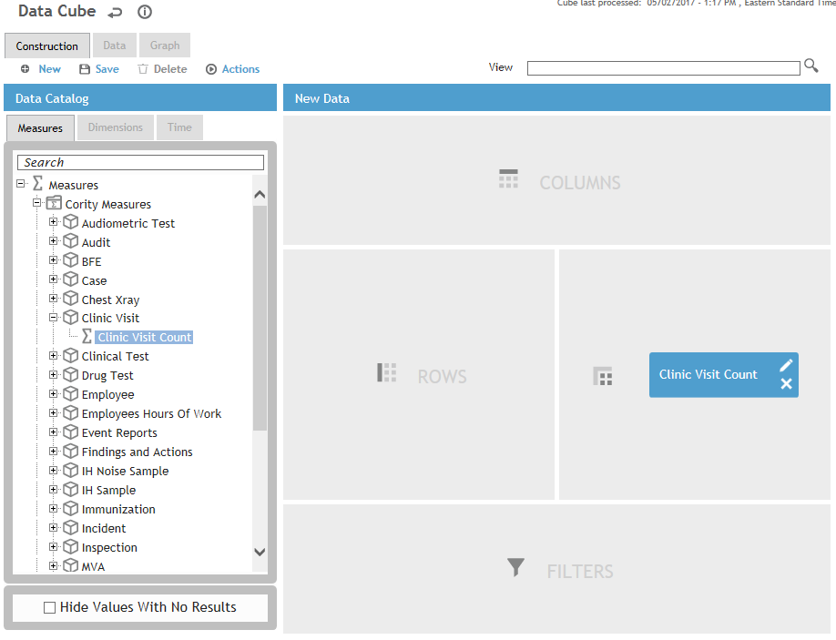
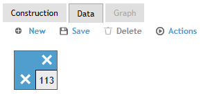
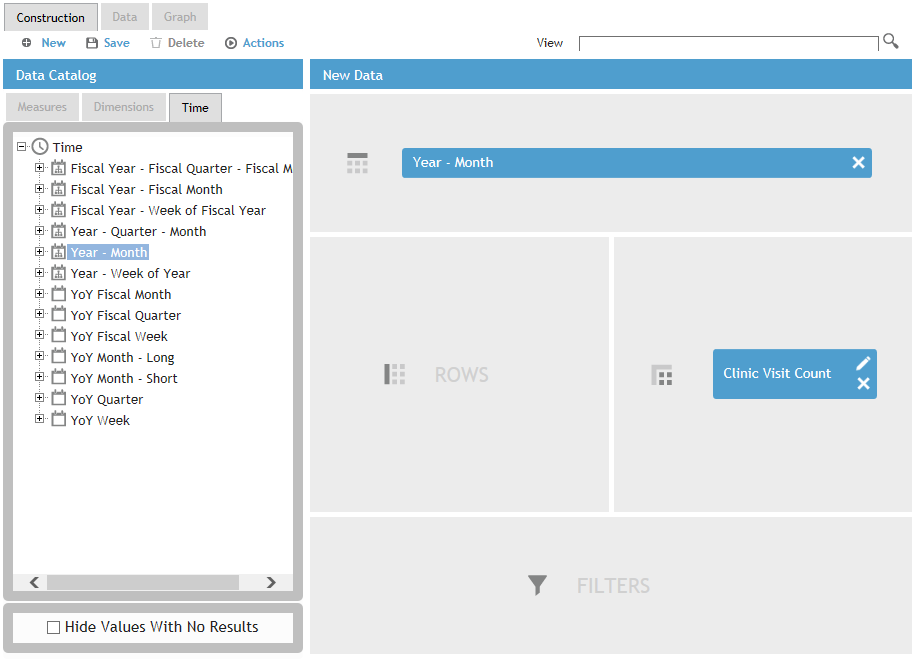
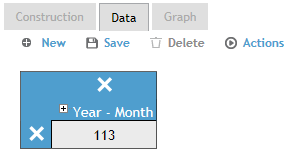
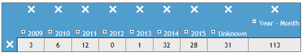
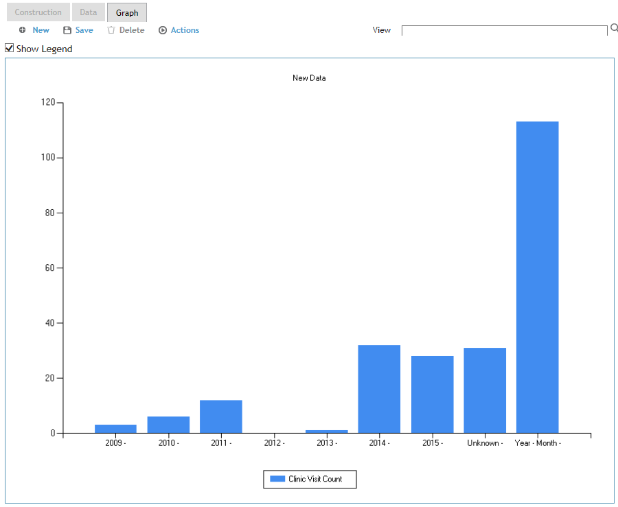
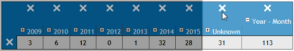
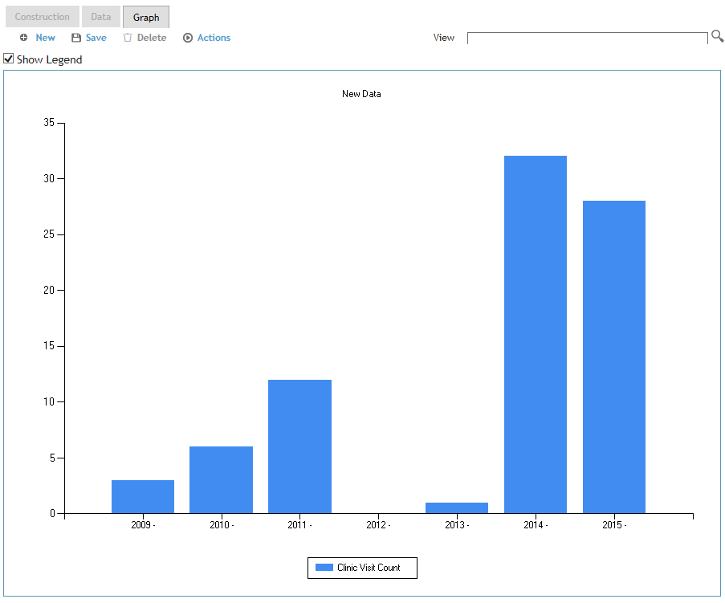

Let's say you want to see the total number of clinic visit records from Cority's database.
In the Data Catalog, expand Measures>Cority Measures>Clinic Visit, and drag Clinic Visit Count into the Values drop area. Notice that as you drag an item toward the drop areas, compatible drop area(s) are highlighted.

Now click the Data tab. Cority generates the result in a tabular form, which isn't very impressive at this point as there is only one number in the table. This number is the Clinic Visit Count—the measure that you just dropped into the Values drop area.

Let's say you want to know how many clinic visits occurred in year. Go back to the Construction tab, and under Time dimensions, drag Year–Month into the Columns drop area

Go back to the Data tab. Notice that now “Year–Month” is shown above the count:

Click the + beside “Year–Month” to expand it, to see the number of records broken down by month, with the total summed up in the ““YoY Month-Short” column.

If you need to present this data to a client and want it to look more eye-catching than just numbers in a table, switch to the Graph tab.

Cority takes the values in your current Data view and graphs them. You might notice sometimes the graph isn't exactly what you want -- in our example, the total number of records under the “Unknown” and “Year–Month” columns of the table are also graphed.
Go back to the Data tab, and click the X above each of the “Unknown” and “Year–Month” columns.

When you return to the Graph tab, you’ll notice those columns have been removed from your graph.
